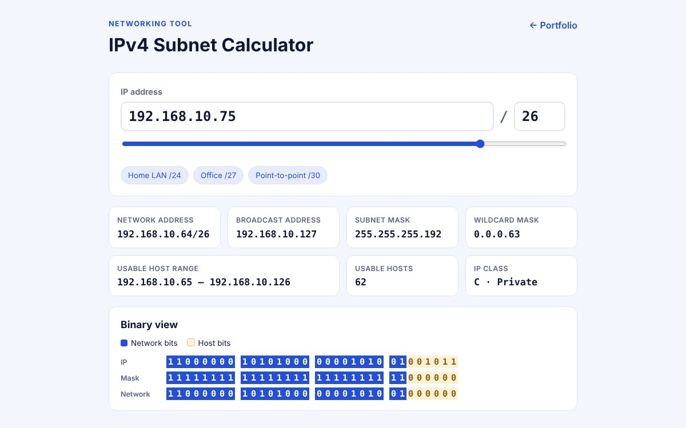

IPv4 Subnet Calculator
Role: UI/UX Designer & Developer
A networking tool that turns an IP address and CIDR prefix into the network address, broadcast address, usable host range, and subnet mask. It also shows the address in binary with the network bits highlighted, so students can see how subnetting works instead of memorizing it.